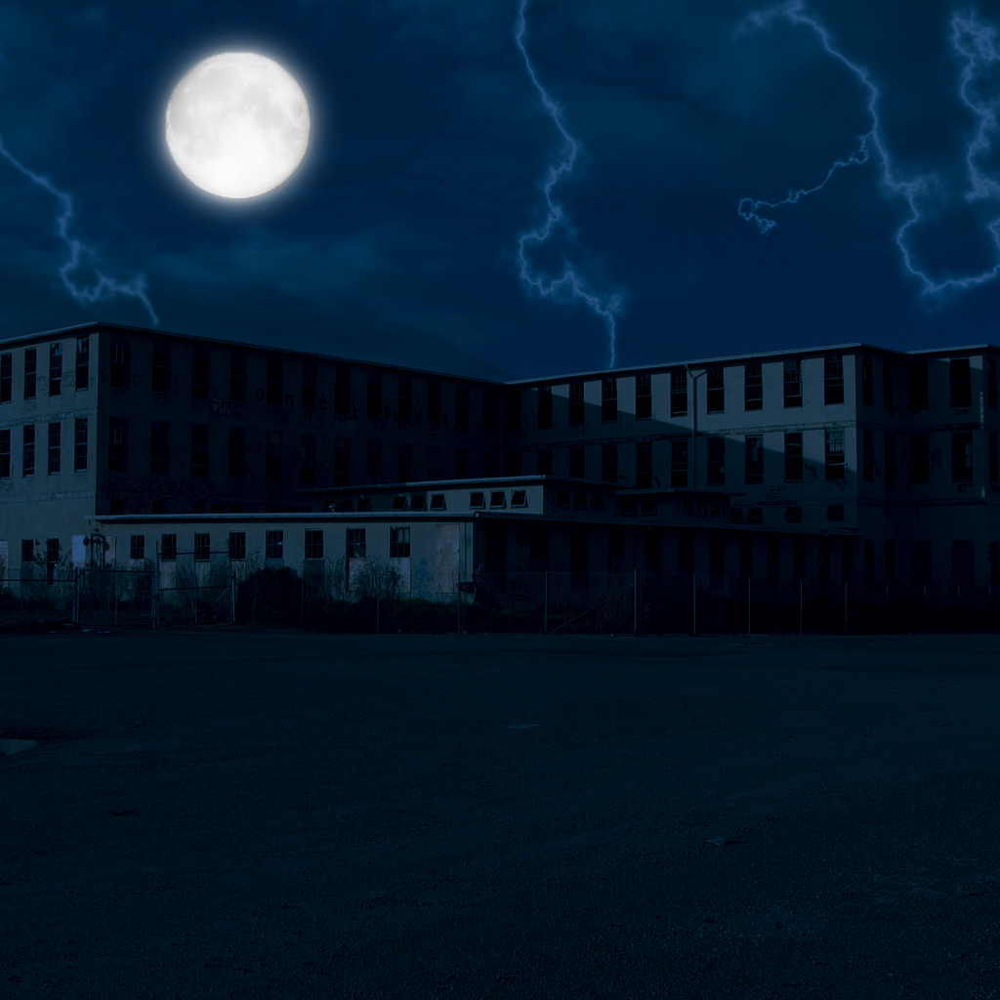

Lets begin with the late 1880's, when the asylum was a simple school for children. After the schools bankruptsy in 1915, the school became a hospital for patients suffering from the Spanish Flu where hundreds of people lost their lives due to the flu.
